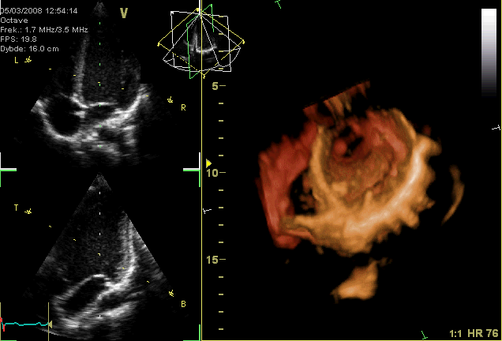
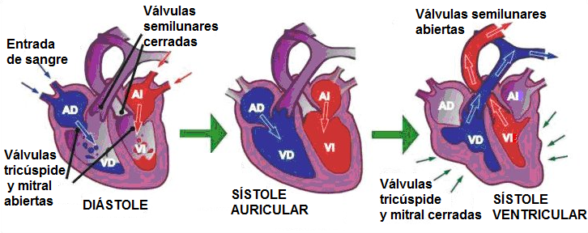

2.1. Fisiología cardíaca
Ciclo cardíaco
El corazón realiza dos tipos de movimientos, uno de contracción (sístole) y otro de relajación (diástole). Cada latido del corazón ocasiona una secuencia de eventos que se denominan ciclos cardíacos.
|  |
|
Movimientos del corazón |
En cada ciclo cardíaco (latido), el corazón alterna una contracción (sístole) y una relajación (diástole). En humanos, el corazón late por minuto alrededor de 70 veces, es decir, realiza 70 ciclos cardíacos.
Para que exista paso de sangre de una cavidad a otra del corazón, la presión de la cavidad impulsora ha de ser siempre mayor que la de la cavidad receptora.
El ciclo cardíaco está comprendido entre el final de una sístole ventricular y el final de la siguiente sístole ventricular. Dura 0,8 segundos y consta de 3 fases:
- Diástole general: es la dilatación de las aurículas y de los ventrículos. La sangre entra en las aurículas. Las válvulas mitral y tricúspide se abren y las válvulas semilunares se cierran. La diástole general dura 0,4 segundos.
- Sístole auricular: contracción simultánea de las aurículas derecha e izquierda. Este paso de sangre es esencialmente pasivo, por lo que la contracción auricular participa poco en condiciones de reposo, sí que cobra importancia durante el ejercicio físico. La sangre se dirige a los ventrículos a través de las válvulas tricúspide y mitral. Dura 0,1 segundos. En este momento el volumen ventricular es máximo
- Sístole ventricular: contracción simultánea de los ventrículos derecho e izquierdo, expulsando la sangre hacia el aparato circulatorio. La sangre se dirige hacia las arterias pulmonar y aorta a través de las válvulas semilunares. La sístole ventricular tiene una duración de 0,3 segundos. Los ventrículos nunca se vacían del todo.
|  |
| Elaboración propia |
Ruidos cardíacos
En el ciclo cardíaco se pueden escuchar dos ruidos y corresponden a los sonidos "lubb-dupp" considerados como los latidos del corazón:
- Primer ruido cardíaco (R1): cierre de válvulas tricuspide y mitral.
- Segundo ruido cardíaco (R2):cierre de válvulas semilunares (válvulas pulmonares y aortas).
Ambos ruidos se producen debido al cierre súbito de las válvulas, sin embargo no es el cierre lo que produce el ruido, sino la reverberación de la sangre adyacente y la vibración de las paredes del corazón y vasos cercanos. La propagación de esta vibración da como resultado la capacidad para auscultar dichos ruidos.